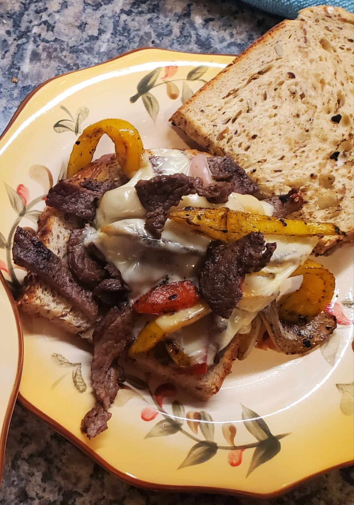

.
Steak Sandwich

Description
The sizzling skirt steak harmonizes deliciously well with refreshing, crisp bell peppers
and caramelized onions. Serve on a slice of warm, toasty Italian bread with melted cheddar and you have a simple but satisfying lunch.
Ingredients
- 1 tablespoon cooking oil
- 1/2 pound (225 grams) skirt steak, trimmed
- 1/2 medium (55 grams) yellow onion, sliced
- 4 slices (30 grams each) Italian bread
- 4 slices(30 grams each) sharp cheddar
- 1 medium (120 grams) bell pepper, sliced
- Salt and pepper, to taste
Servings
- 15 minute prep time
- 15 minute cook time
- 5 minute bake time
- 35 minute total time
- Serves 4
How to Prepare
- Preheat the oven to 425°F, and spray a baking sheet with cooking oil. Season the steak with salt and pepper.
- Preheat a small nonstick skillet over medium heat with cooking oil. When pan is hot enough for oil to slide around easily, add the steak.
Cook for 3-4 minutes on each side or until steak reaches desired doneness. Set aside until cool enough to handle; slice thinly.
- Meanwhile, sauté onions in the same pan, on medium-high heat, until golden brown. Set aside.
- Add the bread slices to the baking sheet. Top each bread slice with one slice of cheddar cheese. Bake for about 5 minutes until cheese is melted.
- Layer the steak, onions, and bell peppers onto each bread slice, and serve.
Nutrition Information
Calories: 296kcal | Carbohydrates: 18g | Protein: 20g | Fat: 16g | Saturated Fat: 6g | Monosaturated Fat: 4g
Cholesterol: 57mg | Sodium: 432mg | Potassium: 305mg | Fiber: 2g | Sugar: 2g | Vitamin A: 6% | Vitamin C: 36% | Calcium: 18%
| Iron: 12%
Recipe obtained from: MyFitnessPal
.